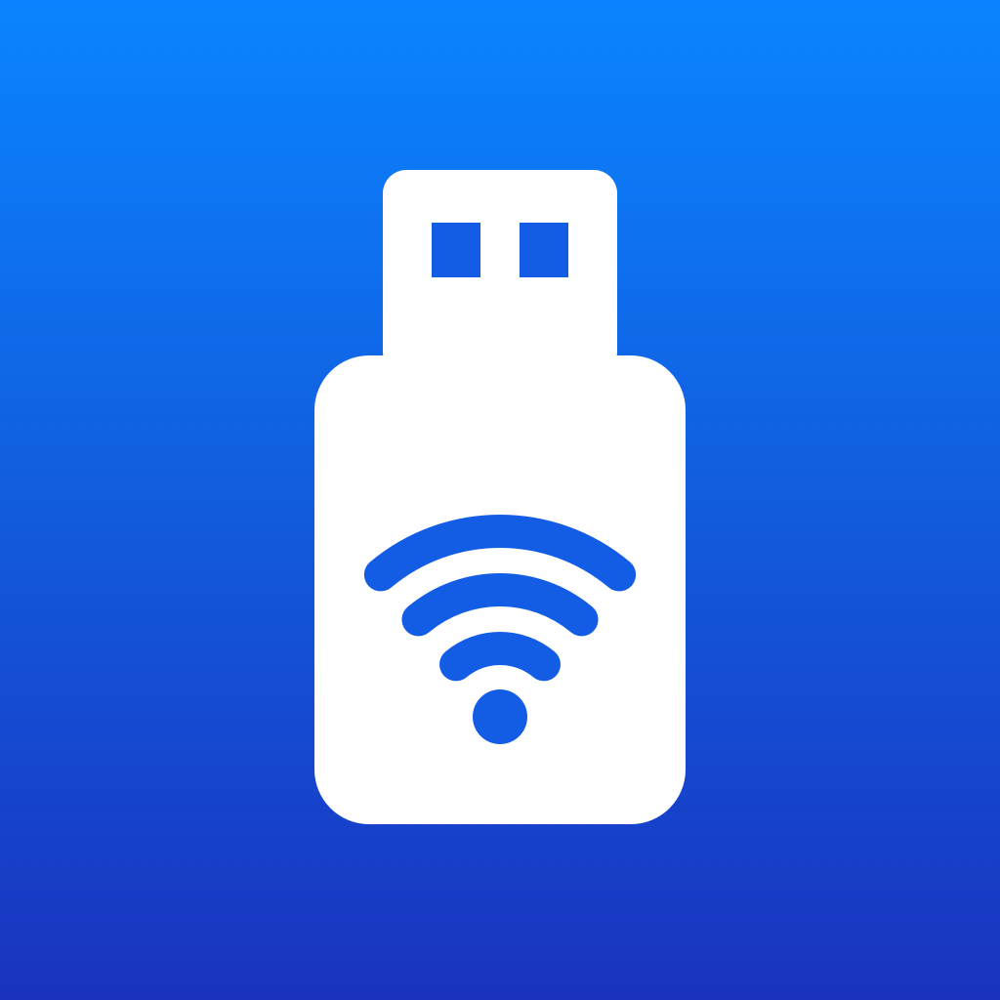
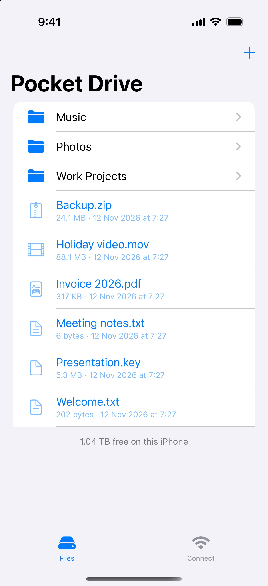
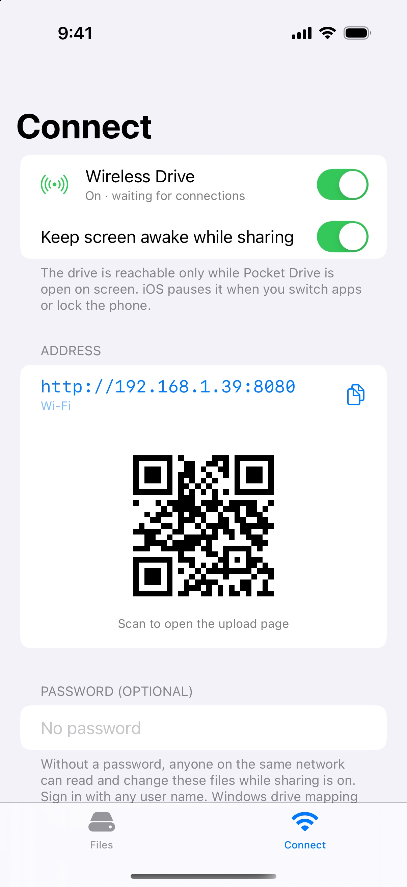
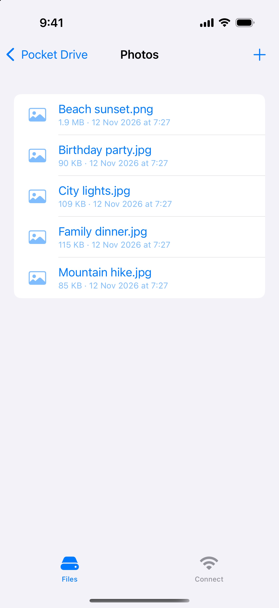

Pocket Drive: Wi-Fi File Share
Your iPhone's storage, as a drive on any computer on your network.



- Mac: connect once from Finder (Go > Connect to Server) and your iPhone shows up as a drive.
- Windows: map it as a network drive, or scan the QR code and upload from any browser.
- USB cable: drag files in through Finder or the Apple Devices app.
- On the phone: import files, folders, photos and videos; browse, preview, rename, share and delete.
- Private: files never leave your local network. Optional password. No account, no ads, no tracking.
Sharing works while Pocket Drive is open on the screen, because iOS pauses apps in the background.
Get it on the App StoreQuestions and answers
How do I transfer files from an iPhone to a Mac without a cable?
Open Pocket Drive on the iPhone, then on the Mac choose Go > Connect to Server in Finder. After connecting once, the iPhone shows up as a drive.
How do I transfer files between an iPhone and a Windows PC?
Map the iPhone as a network drive, or scan the QR code shown in the app and upload from any browser.
Does Pocket Drive need an account?
No. There is no account, no ads and no tracking, and files never leave your local network. A password is optional.
Can I use it with a USB cable?
Yes. Drag files in through Finder or the Apple Devices app.
Does sharing work in the background?
Sharing works while Pocket Drive is open on the screen, because iOS pauses apps in the background.